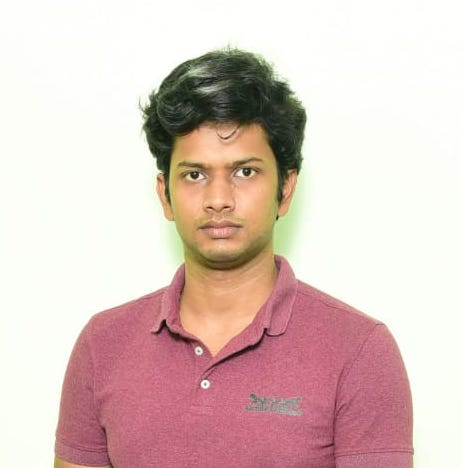

Winter School · 10–15 December 2026 · IIT Madras, Chennai
COLD is a six-day intensive winter school for late undergraduate students from engineering, mathematics, physics, and computer science. Hosted by the Centre for Complex Systems and Dynamics at IIT Madras, the school delivers fifteen lectures across four interconnected themes, alongside hands-on research projects and visits to active laboratories — offering an early, rigorous entry into ideas reshaping modern science and engineering.
Venue
Smart Classroom, KCB328, IIT Madras, Chennai
Audience
3rd/4th year UG or Masters — Engineering, Maths, Physics, CS · ~30 students
Important Dates
Application deadline · 31 Aug 2026
Registration & fee payment · 15 Sep 2026
Daily Format
3 lectures (morning) + Project work / Lab visits (afternoon) + Discussion (evening)
Certificate
Issued by the CCSD, IIT Madras upon successful completion
The most consequential questions of our time don't belong to a single field. They sit exactly at the intersection of mathematics, physics, computation, and engineering — and they all share the same deep structure.
Why do neural networks generalise?
The mathematics of learning is still being written. Classical theory can't explain modern AI — but dynamical systems might.
When does order emerge from chaos?
Flocking birds, synchronised fireflies, turbulent flows — self-organisation is everywhere. What are the rules beneath the patterns?
How does nature solve hard problems?
Evolution, protein folding, ant colonies — nature optimises without a gradient descent step in sight. Can we steal its tricks?
How do a trillion cells act as one?
No central controller. No global blueprint. Yet bodies form, wounds heal, and brains think. Collective dynamics is the answer.
These aren't separate questions — they're the same question, in different disguises.
COLD gives you the common language: nonlinear dynamics, statistical mechanics, control theory, and machine learning — taught together, for the first time, by researchers working at these frontiers.
Each theme runs through the school as a strand — three dedicated lectures, a project dimension, and daily cross-connections with the other three.
What makes a problem hard? From P vs NP and decision problems to NP-hardness reductions and approximation algorithms — the mathematical theory of computational tractability.
The language of finding the best. Convex analysis, gradient descent and its modern variants, stochastic optimisation, and the geometry of high-dimensional loss landscapes.
When can machines learn from data, and how much? Statistical learning theory (PAC, VC dimension), neural network architectures, reinforcement learning, and the scaling laws of large models.
How do systems evolve in time? Phase portraits, equilibria, bifurcations, limit cycles, chaos — and the surprising connections between nonlinear dynamics and computation at the edge of chaos.
Three morning lectures, an afternoon lecture or lab visit, and an evening perspective talk each day. Dec 13 (Sunday) is a rest day — the school runs Thu 10 through Tue 15.
| Time | Day 1 Thu, Dec 10 |
Day 2 Fri, Dec 11 |
Day 3 Sat, Dec 12 |
Day 4 Mon, Dec 14 |
Day 5 Tue, Dec 15 |
|---|---|---|---|---|---|
| 9:00–10:00 |
L1.1 · Complexity
Computational Complexity
|
L2.1 · Complexity
Graph Theory & Network Complexity
|
L3.1 · Complexity
NP-Hardness, Reductions & Approximation
|
L4.1 · Learning
Reinforcement Learning: MDPs, Bellman & Policy Gradient
|
📊 Presentations
Project Presentations (25 min/group)
|
| 10:00–10:30 | ☕ Tea Break | ||||
| 10:30–11:30 |
L1.2 · Dynamics
Dynamical Systems: Flows, Fixed Points & Stability
|
L2.2 · Dynamics
Bifurcations & Limit Cycles
|
L3.2 · Mixed
Scaling Laws, Emergence & Phase Transitions in Large Models
|
L4.2 · Dynamics
Chaos & Numerical continuation
|
📊 Presentations
Project Presentations (continued)
|
| 11:30–12:30 |
L1.3 · Optimisation
Convex Sets, Functions & Optimisation Basics
|
L2.3 · Optimisation
Gradient Descent & Its Variants
|
L3.3 · Optimisation
Stochastic Opt & Loss Landscape Geometry
|
L4.3 · Mixed
Open Problems: Where Complexity, Learning & Dynamics Meet
|
📊 Presentations
Project Presentations (continued)
|
| 12:30–14:00 | 🍽 Lunch | ||||
| 14:00–15:30 |
L1.4 · Learning
Statistical Learning Theory: PAC & VC Dimension
|
L2.4 · Learning
Neural Networks: Architectures & Expressivity
|
L3.4 · Mixed
Nonlinear Dynamics meets Learning: Reservoir Computing
|
🔬 Lab Visit
Computations / Robotics Laboratory
|
📊 Presentations
Project Presentations (continued)
|
| 15:30–16:00 | ☕ Break | ||||
| 16:00–17:00 |
🔧 Project
Kick-off, Group Formation & Tutorial
|
💬 Perspective Talk
Evening Perspective Lecture
|
💬 Perspective Talk
Evening Perspective Lecture
|
💬 Perspective Talk
Evening Perspective Lecture
|
🏆 Closing
Awards & Closing Remarks
|
* Dec 13 (Sunday) is a rest day, to explore the city and also work on the project. School starts Thursday Dec 10 and concludes Tuesday Dec 15.
Distinguished researchers joining us for perspective lectures during the school.
Faculty and researchers from IIT Madras leading the school.
Aditi Kathpalia
Faculty · Project Mentor
Information theory, Neuroscience
AMBE, IIT Madras
Anubhab Roy
Associate Professor · Project Mentor
Non-linear Dynamics, Instability
AMBE, IIT Madras
Anuj Tiwari
Assistant Professor · Project Mentor
Robotics, Optimisation, Control
Mechanical Engineering, IIT Madras
Danny Raj M
Assistant Professor · Lecturer
Complexity, Collective Behaviour, Non-linear Dynamics
AMBE, IIT Madras

Kannabiran S
Assistant Professor · Lecturer
Turbulence, Complexity, Learning
AMBE, IIT Madras
S Ganga Prasath
Assistant Professor · Lecturer
Robotics, Learning, Control
AMBE, IIT Madras
Sayan Gupta
Professor · Lecturer
Complex Networks, Optimisation, Learning
AMBE, IIT Madras
Sunetra Sarkar
Professor · Lecturer
Non-linear Dynamics, Instability
Aerospace Engineering, IIT Madras
Participation in COLD'26 is by selection. Submit your application and shortlisted candidates will be notified. The registration fee and logistics are handled only after selection.
Submit application before 31 Aug
Fill the online form
Selection by 10 Sep
Shortlist notified by email
Fee payment before 15 Sep
₹1,000 + GST
(selected only)
Attend
Dec 10–15,
IIT Madras
Submit application
Fill the online form
Selection by 10 Sep
Shortlist notified by email
Fee payment before 15 Sep
₹1,000 + GST (selected only)
Attend
Dec 10–15, IIT Madras
Registration fee: ₹1,000 + GST — payable at the CODE Office, IIT Madras. Applicable only to selected participants after notification.
Travel support: Reimbursement up to 3-Tier AC train fare for selected outstation students.
Accommodation & meals: On-campus accommodation and meals provided for all selected participants.
Certificate: Issued by the Center for Complex Systems & Dynamics, IIT Madras on successful participation.
Starter Python notebooks with data and helper functions will be provided for all projects.
Questions about the school? Write to us.
Alumni Avenue, Mechanical Sciences Block,
IIT Madras, Chennai 600036.
(044) 2257 4080 / 4086
anubhab@smail.iitm.ac.in
sgangaprasath@smail.iitm.ac.in